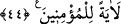

ALLAH’TAN BAŞKA
DOST EDİNENLERİN DURUMU
36. Medyen’e de kardeşleri Şuayb’ı gönderdik ve Şuayb: Ey kavmim! Allah’a
kulluk edin, âhiret gününe umut bağlayın, yeryüzünde bozgunculuk yaparak
karışıklık çıkarmayın! dedi.
37. Fakat onu yalancılıkla itham ettiler. Derken, kendilerini bir sarsıntı
yakalayıverdi ve yurtlarında diz üstü çöke kaldılar.
38. Âd ve Semûd’u da (helâk ettik). Sizin için, (onların başına nelerin geldiği)
oturdukları yerlerden apaçık anlaşılmaktadır. Şeytan onlara yaptıkları işleri güzel
gösterip onları doğru yoldan çıkardı. Oysa bakıp görebilecek durumdaydılar.
39. Karun’u, Firavun’u ve Hâmân’ı da (helâk ettik). Andolsun ki, Musa onlara
apaçık deliller getirmişti de onlar yeryüzünde büyüklük taslamışlardı. Halbuki
(azabımızı aşıp) geçebilecek değillerdi.
40. Nitekim, onlardan her birini günahı sebebiyle cezâlandırdık. Kiminin üzerine